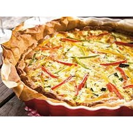

Ingrediënten:
- Courgette
- Paprika
- Ei
- Kaas
- Bladerdeeg
Bereiding:
- Verwarm de oven voor volgens de instructies op het bladerdeeg.
- Bekleed een quichevorm met het bladerdeeg en prik er gaatjes in met een vork.
- Snijd de courgette en paprika in kleine stukjes en bak ze kort in een pan.
- Klop de eieren los in een kom en meng met geraspte kaas en de gebakken groenten.
- Giet het eimengsel in de quichevorm.
- Bak de quiche in de voorverwarmde oven tot hij goudbruin en stevig is.
